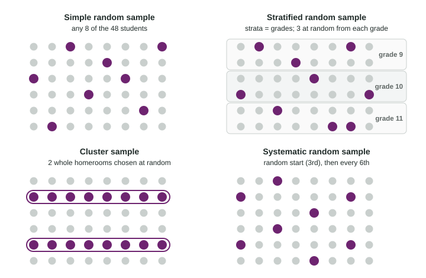

Random Sampling
Random sampling uses chance to choose individuals from a sampling frame.
Part 1 · Hook
Why this matters
Part 2 · Before you start
What this builds on
Part 3 · Prerequisite check
Quick check before you start
1. A school wants to know what its 1,200 students think. What is the population?
- The 1,200 students
- The 100 students asked
- The principal
- The schedule
Show the answer
The population is the whole group the question is about.
- Correct: The 1,200 students:
- The 100 students asked:
- The principal:
- The schedule:
2. A study asks 100 students their opinion without imposing anything. What kind of study is it?
- A sample survey
- An experiment
- A census
- None of these
Show the answer
It asks a sample questions, so it is a sample survey, an observational study.
- Correct: A sample survey:
- An experiment:
- A census:
- None of these:
Part 4 · See it
See it first

Part 5 · Step by step
How it works, step by step
- Use chance, not judgment, to choose the sampleno one’s preferences decide who is in it, so it tends to represent the population
- Label every individual in the sampling frame and pick labels at random, skipping repeatsyou get a simple random sample: every group of n has the same chance
- Split the population into strata of similar individuals and sample eachevery group is represented, and estimates vary less when strata differ
- Choose whole clusters, or every kth individual after a random startsampling is cheaper and easier, at some cost in precision or with a risk from patterns in the list
Part 6 · Key ideas
Key ideas
- A simple random sample (SRS) of size n gives every group of n individuals the same chance of being chosen. Procedure: label, generate random numbers, skip repeats, select.
- Sampling without replacement means each individual can be chosen once; with replacement allows repeats.
- A stratified random sample splits the population into strata of similar individuals and takes an SRS from each.
- A cluster sample chooses whole groups at random and measures everyone in them. A systematic random sample takes every kth individual after a random start.
- The sampling frame is the list the sample is drawn from.
Part 7 · Misconception
A common mistake
The wrong idea: "Use a random number generator to choose 10 ponds" is a complete procedure.
What actually happens: Someone else could not follow it. Say how the ponds are labeled (1 to 80), what is generated (whole numbers from 1 to 80), what to do with repeats (skip them) and when to stop (10 different ponds).
Part 8 · Check yourself
Check yourself
Exam-style questions. Anything you miss goes into your review queue.
Table
Four ways to sample a school
A high school has 1,200 students: 300 in each of grades 9, 10, 11 and 12, in 48 homerooms of 25 students. The principal wants about 100 students’ opinions on a new schedule. Four plans:
- Plan P: number the students from 1 to 1,200 and use a random number generator to choose 100 different numbers.
- Plan Q: choose 25 students at random from each grade.
- Plan R: choose 4 of the 48 homerooms at random and survey every student in them.
- Plan S: list the students alphabetically, choose a random starting point among the first 12, then take every 12th student.
1. What kind of sample does plan P give?
- A stratified random sample
- A simple random sample
- A cluster sample
- A systematic random sample, since a generator is used
Show the answer
Choosing n individuals so that every possible group of n has the same chance is a simple random sample.
- A stratified random sample: Numbering the students is a step in choosing; nothing is split into strata.
- Correct: A simple random sample: Right: every group of 100 students has the same chance of being the sample.
- A cluster sample: A cluster sample takes whole groups such as homerooms; plan P picks individual students.
- A systematic random sample, since a generator is used: A systematic sample takes every kth individual after a random start.
2. What kind of sample does plan Q give?
- A cluster sample, with the grades as the clusters
- A simple random sample of 100 of the school’s students
- A systematic random sample of 25 students per grade
- A stratified random sample, with the grades as strata
Show the answer
Splitting the population into strata and taking a simple random sample from each is a stratified random sample.
- A cluster sample, with the grades as the clusters: In a cluster sample whole groups are chosen and everyone in them is surveyed; plan Q samples within every grade.
- A simple random sample of 100 of the school’s students: Not every group of 100 is possible: a sample of 100 ninth graders cannot happen.
- A systematic random sample of 25 students per grade: No every kth rule is used; students are chosen at random within each grade.
- Correct: A stratified random sample, with the grades as strata: Right: the population is split into groups by grade and a simple random sample is taken from each.
3. What kind of sample does plan R give, and what is its main advantage?
- A cluster sample: whole homerooms make it easy
- A stratified sample: it guarantees that each grade is included
- A simple random sample: each student has the same chance of selection
- A systematic sample
Show the answer
Choosing whole groups (clusters) at random and measuring every individual in them is cluster sampling. Its strength is convenience.
- Correct: A cluster sample: whole homerooms make it easy: Right: clusters are chosen at random and everyone in them is included, which saves time.
- A stratified sample: it guarantees that each grade is included: Homerooms are chosen at random, so some grades may be missed; it is a cluster sample.
- A simple random sample: each student has the same chance of selection: Each student does have the same chance, but not every group of 100 is possible, so it is not simple random.
- A systematic sample: The 4 homerooms are chosen at random, not by an every kth rule.
4. The principal thinks opinions on the schedule differ a lot from grade to grade. Which plan best makes sure each grade’s view is represented?
- Plan R
- Plan P
- Plan Q
- Plan S
Show the answer
Stratify by a variable that is related to the response: each stratum is represented, and estimates vary less from sample to sample.
- Plan R: Four random homerooms could all come from one or two grades.
- Plan P: A simple random sample could by chance include few students from some grade.
- Correct: Plan Q: Right: stratifying by grade guarantees 25 students from each grade, and when grades differ it gives more precise results.
- Plan S: An alphabetical list has nothing to do with grade, so grades may be uneven.
Table
Testing pond water
A park has 80 ponds, listed on a park map. A wildlife team has the time and equipment to test the water in 10 of them, and wants a simple random sample of 10 ponds.
5. Put the steps for choosing the simple random sample of 10 ponds in order.
- Label the 80 ponds on the map with the numbers 1 to 80
- Use a random number generator to produce whole numbers from 1 to 80
- Skip any number that has already been chosen
- Keep going until 10 different numbers are chosen
- Test the water in the 10 ponds with those numbers
Show the answer
Label, generate random numbers, skip repeats, stop at 10 different labels, then measure those individuals.
- Correct order: 1. Label the 80 ponds on the map with the numbers 1 to 80 2. Use a random number generator to produce whole numbers from 1 to 80 3. Skip any number that has already been chosen 4. Keep going until 10 different numbers are chosen 5. Test the water in the 10 ponds with those numbers
6. A team member writes, "Use a random number generator to pick 10 ponds." Why is this not enough as a procedure?
- It leaves out labeling 1 to 80 and handling repeats
- A random number generator gives the same pond each time
- Ten ponds is too few
- Ponds have to be picked from a table, not from a generator
Show the answer
A procedure must be clear enough that another person could carry it out exactly: label 1 to 80, generate, skip repeats, choose 10.
- Correct: It leaves out labeling 1 to 80 and handling repeats: Right: someone else could not follow it. A procedure must label, generate, skip repeats and select.
- A random number generator gives the same pond each time: A generator gives different numbers; the issue is the missing steps.
- Ten ponds is too few: The sample size was set by time and equipment; the procedure is what is incomplete.
- Ponds have to be picked from a table, not from a generator: Either a table or a generator works when the steps are spelled out.
7. How should strata differ from clusters?
- Strata are chosen at random, and clusters are chosen by the researcher
- Strata are larger groups of people than clusters
- Strata hold similar individuals; clusters each mix the population
- Strata and clusters are two names for the same idea
Show the answer
Stratify by groups whose members are similar to each other; cluster by groups that each resemble the whole population.
- Strata are chosen at random, and clusters are chosen by the researcher: In stratified sampling every stratum is sampled; in cluster sampling clusters are chosen at random.
- Strata are larger groups of people than clusters: Size does not define them; what matters is how alike the individuals are within each group.
- Correct: Strata hold similar individuals; clusters each mix the population: Right: strata group similar individuals; clusters work best when each one mixes the population.
- Strata and clusters are two names for the same idea: They are used in opposite ways: sample within every stratum, or survey all of a few clusters.
Part 9 · Summary
Summary
Part 10 · Up next
What comes next
Part 11 · Connections